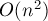

MAXimal
добавлено: 6 Sep 2011 1:03
редактировано: 11 Feb 2012 15:03
Содержание [скрыть]
Поиск всех тандемных повторов в строке. Алгоритм Мейна-Лоренца
Дана строка  длины
длины  .
.
Тандемным повтором (tandem repeat) в ней называются два вхождения какой-либо подстроки подряд. Иными словами, тандемный повтор описывается парой индексов  такими, что подстрока
такими, что подстрока ![s[i \ldots j]](../tex2png/cache/1da9aede35685d45e082c44a363fe070.png) — это две одинаковые строки, записанные подряд.
— это две одинаковые строки, записанные подряд.
Задача заключается в том, чтобы найти все тандемные повторы. Упрощённые варианты этой задачи: найти любой тандемный повтор или найти длиннейший тандемный повтор.
Примечание. Во избежание путаницы все строки в статье мы будем считать 0-индексированными, т.е. первый символ строки имеет индекс 0.
Описываемый здесь алгоритм был опубликован в 1982 г. Мейном и Лоренцем (см. список литературы).
Пример
Рассмотрим тандемные повторы на примере какой-нибудь простой строки, например:
В этой строке присутствуют следующие тандемные повторы:
Другой пример:
Здесь есть только два тандемных повтора:
Число тандемных повторов
Вообще говоря, тандемных повторов в строке длины может быть порядка .
Очевидным примером является строка, составленная из одинаковых букв — в такой строке тандемным повтором является любая подстрока чётной длины, которых примерно . Вообще, любая периодичная строка с коротким периодом будет содержать очень много тандемных повторов
С другой стороны, сам по себе этот факт никак не препятствует существованию алгоритма с асимптотикой  , поскольку алгоритм может выдавать тандемные повторы в том или ином сжатом виде, группами по несколько штук сразу.
, поскольку алгоритм может выдавать тандемные повторы в том или ином сжатом виде, группами по несколько штук сразу.
Более того, существует понятие серий — четвёрок чисел, которые описывают целую группу периодических подстрок. Было доказано, что число серий в любой строке линейно по отношению к длине строки.
Впрочем, описываемый ниже алгоритм не использует понятие серий, поэтому не будем детализировать это понятие.
Приведём здесь и другие интересные результаты, относящиеся к количеству тандемных повторов:
- Известно, что если рассматривать только примитивные тандемные повторы (т.е. такие, половинки которых не являются кратными строками), то их количество в любой строке — .
- Если кодировать тандемные повторы тройками чисел (называемыми тройками Крочемора (Crochemore)) (где
 — позиция начала,
— позиция начала,  — длина повторяющейся подстроки,
— длина повторяющейся подстроки,  — количество повторов), то все тандемные повторы любой строки можно вывести с помощью таких троек. (Именно такой результат получается на выходе алгоритма Крочемора нахождения всех тандемных повторов.)
— количество повторов), то все тандемные повторы любой строки можно вывести с помощью таких троек. (Именно такой результат получается на выходе алгоритма Крочемора нахождения всех тандемных повторов.) - Строки Фибоначчи, определяемые следующим образом:
являются "сильно" периодичными.
Число тандемных повторов в
-ой строке Фибоначчи длины , даже сжатых с помощью троек Крочемора, составляет .Число примитивных тандемных повторов в строках Фибоначчи — также имеет порядок .
Алгоритм Мейна-Лоренца
Идея алгоритма Мейна-Лоренца довольно стандартна: это алгоритм "разделяй-и-властвуй".
Кратко он заключается в том, что исходная строка разбивается пополам, решение запускается от каждой из двух половинок по отдельности (тем самым мы найдём все тандемные повторы, располагающиеся только в первой или только во второй половинке). Дальше идёт самая сложная часть — это нахождение тандемных повторов, начинающихся в первой половине и заканчивающихся во второй (назовём такие тандемные повторы для удобства пересекающими). Как именно это делается — и есть сама суть алгоритма Мейна-Лоренца; это мы подробно опишем ниже.
Асимптотика алгоритма "разделяй-и-властвуй" хорошо исследована. В частности, для нас важно, что если мы научимся искать пересекающие тандемные повторы в строке длины за  , то итоговая асимптотика всего алгоритма получится .
, то итоговая асимптотика всего алгоритма получится .
Поиск пересекающих тандемных повторов
Итак, алгоритм Мейна-Лоренца свёлся к тому, чтобы по заданной строке научиться искать все пересекающие тандемные повторы, т.е. такие, которые начинаются в первой половине строки, а заканчиваются — во второй.
Обозначим через  и
и  две половинки строки :
две половинки строки :

(их длины примерно равны длине строки , делённой пополам).
Правые и левые тандемные повторы
Рассмотрим произвольный тандемный повтор и посмотрим на его средний символ (точнее, на тот символ, с которого начинается вторая половинка тандема; т.е. если тандемный повтор — это подстрока , то средним символом будет .
Тогда назовём тандемный повтор левым или правым в зависимости от того, где находится этот символ — в строке или в строке . (Можно сказать и так: тандемный повтор называется левым, если большая его часть лежит в левой половине строки ; иначе — тандемный повтор называется правым.)
Научимся искать все левые тандемные повторы; для правых всё будет аналогично.
Центральная позиция тандемного повтора
Обозначим длину искомого левого тандемного повтора через (т.е. длина каждой половинки тандемного повтора — это  ). Рассмотрим первый символ тандемного повтора, попадающий в строку (он стоит в строке в позиции ). Он совпадает с символом, стоящим на позиций раньше него; обозначим эту позицию через .
). Рассмотрим первый символ тандемного повтора, попадающий в строку (он стоит в строке в позиции ). Он совпадает с символом, стоящим на позиций раньше него; обозначим эту позицию через .
Искать все тандемные повторы мы будем, перебирая эту позицию : т.е. найдём сначала все тандемные повторы с одним значением , затем с другим значением, и т.д. — перебирая все возможные значения от  до .
до .
Например, рассмотрим такую строку:
(символ вертикальной черты разделяет две половинки и )
Тандемный повтор , содержащийся в этой строке, будет обнаружен, когда мы будем просматривать значение — потому что именно в позиции  стоит символ 'a', совпадающий с первым символом тандемного повтора, попавшим в половинку .
стоит символ 'a', совпадающий с первым символом тандемного повтора, попавшим в половинку .
Критерий наличия тандемного повтора с заданным центром
Итак, мы должны научиться для зафиксированного значения быстро искать все тандемные повторы, соответствующие ему.
Получаем такую схему (для абстрактной строки, в которой содержится тандемный повтор ):
Здесь через и  мы обозначили длины двух кусочков тандемного повтора: — это длина части тандемного повтора до позиции , а — это длина части тандемного повтора от до конца половинки тандемного повтора. Таким образом, — это длина тандемного повтора.
мы обозначили длины двух кусочков тандемного повтора: — это длина части тандемного повтора до позиции , а — это длина части тандемного повтора от до конца половинки тандемного повтора. Таким образом, — это длина тандемного повтора.
Взглянув на эту картинку, можно понять, что необходимое и достаточное условие того, что с центром в позиции находится тандемный повтор длины , является следующее условие:
- Пусть
 — это наибольшее число такое, что символов перед позицией совпадают с последними символами строки :
— это наибольшее число такое, что символов перед позицией совпадают с последними символами строки : - Пусть
 — это наибольшее число такое, что символов, начиная с позиции , совпадают с первыми символами строки :
— это наибольшее число такое, что символов, начиная с позиции , совпадают с первыми символами строки : - Тогда должно выполняться:
Этот критерий можно переформулировать таким образом. Зафиксируем конкретное значение , тогда:
- Все тандемные повторы, которые мы будем сейчас обнаруживать, будут иметь длину .
Однако таких тандемных повторов может быть несколько: всё зависит от выбора длин кусочков и .
- Найдём и , как было описано выше.
- Тогда подходящими будут являться тандемные повторы, для которых длины кусочков и удовлетворяют условиям:
Алгоритм нахождения длин  и
и
Итак, вся задача сводится к быстрому вычислению длин и для каждого значения .
Напомним их определения:
- — максимальное неотрицательное число, для которого выполнено:
- — максимальное неотрицательное число, для которого выполнено:
На оба этих запроса можно отвечать за  , используя алгоритм нахождения Z-функции:
, используя алгоритм нахождения Z-функции:
- Для быстрого нахождения значений заранее посчитаем Z-функцию для строки (т.е. строки , выписанной в обратном порядке).
Тогда значение
для конкретного будет просто равно соответствующему значению массива Z-функции. - Для быстрого нахождения значений заранее посчитаем Z-функцию для строки (т.е. строки , приписанной к строке через символ-разделитель).
Опять же, значение
для конкретного надо будет просто взять из соответствующего элемента Z-функции.
Поиск правых тандемных повторов
До этого момента мы работали только с левыми тандемными повторами.
Чтобы искать правые тандемные повторы, надо действовать аналогично: мы определяем центр как символ, соответствующий последнему символу тандемного повтора, попавшему в первую строку.
Тогда длина будет определяться как наибольшее число символов до позиции включительно, совпадающих с последними символами строки . Длина будет определяться как максимальное число символов, начиная с , совпадающих с первыми символами строки .
Таким образом, для быстрого нахождения и надо будет посчитать заранее Z-функцию для строк и соответственно. После этого, перебирая конкретное значение , мы по тому же самому критерию будем находить все правые тандемные повторы.
Асимптотика
Асмиптотика алгоритма Мейна-Лоренца составит, таким образом, : поскольку этот алгоритм представляет собой алгоритм "разделяй-и-властвуй", каждый рекурсивный запуск которого работает за время, линейное относительно длины строки: для четырёх строк за линейное время ищется их Z-функция, а затем перебирается значение и выводятся все группы обнаруженных тандемных повторов.
Тандемные повторы обнаруживаются алгоритмом Мейна-Лоренца в виде своеобразных групп: таких четвёрок , каждая из которых обозначает группу тандемных повторов с длиной  , центром и с всевозможными длинами кусочков и , удовлетворяющими условиям:
, центром и с всевозможными длинами кусочков и , удовлетворяющими условиям:
Реализация
Приведём реализацию алгоритма Мейна-Лоренца, которая за время находит все тандемные повторы данной строки в сжатом виде (в виде групп, описываемых четвёрками чисел).
В целях демонстрации обнаруженные тандемные повторы за время  "разжимаются" и выводятся по отдельности. Этот вывод при решении реальных задач легко будет заменить на какие-то другие, более эффективные, действия, например, на поиск наидлиннейшего тандемного повтора или подсчёт количества тандемных повторов.
"разжимаются" и выводятся по отдельности. Этот вывод при решении реальных задач легко будет заменить на какие-то другие, более эффективные, действия, например, на поиск наидлиннейшего тандемного повтора или подсчёт количества тандемных повторов.
vector<int> z_function (const string & s) { int n = (int) s.length(); vector<int> z (n); for (int i=1, l=0, r=0; i<n; ++i) { if (i <= r) z[i] = min (r-i+1, z[i-l]); while (i+z[i] < n && s[z[i]] == s[i+z[i]]) ++z[i]; if (i+z[i]-1 > r) l = i, r = i+z[i]-1; } return z; } void output_tandem (const string & s, int shift, bool left, int cntr, int l, int l1, int l2) { int pos; if (left) pos = cntr-l1; else pos = cntr-l1-l2-l1+1; cout << "[" << shift + pos << ".." << shift + pos+2*l-1 << "] = " << s.substr (pos, 2*l) << endl; } void output_tandems (const string & s, int shift, bool left, int cntr, int l, int k1, int k2) { for (int l1=1; l1<=l; ++l1) { if (left && l1 == l) break; if (l1 <= k1 && l-l1 <= k2) output_tandem (s, shift, left, cntr, l, l1, l-l1); } } inline int get_z (const vector<int> & z, int i) { return 0<=i && i<(int)z.size() ? z[i] : 0; } void find_tandems (string s, int shift = 0) { int n = (int) s.length(); if (n == 1) return; int nu = n/2, nv = n-nu; string u = s.substr (0, nu), v = s.substr (nu); string ru = string (u.rbegin(), u.rend()), rv = string (v.rbegin(), v.rend()); find_tandems (u, shift); find_tandems (v, shift + nu); vector<int> z1 = z_function (ru), z2 = z_function (v + '#' + u), z3 = z_function (ru + '#' + rv), z4 = z_function (v); for (int cntr=0; cntr<n; ++cntr) { int l, k1, k2; if (cntr < nu) { l = nu - cntr; k1 = get_z (z1, nu-cntr); k2 = get_z (z2, nv+1+cntr); } else { l = cntr - nu + 1; k1 = get_z (z3, nu+1 + nv-1-(cntr-nu)); k2 = get_z (z4, (cntr-nu)+1); } if (k1 + k2 >= l) output_tandems (s, shift, cntr<nu, cntr, l, k1, k2); } }
Литература
- Michael Main, Richard J. Lorentz. An O (n log n) Algorithm for Finding All Repetitions in a String [1982]
- Bill Smyth. Computing Patterns in Strings [2003]
- Билл Смит. Методы и алгоритмы вычислений на строках [2006]